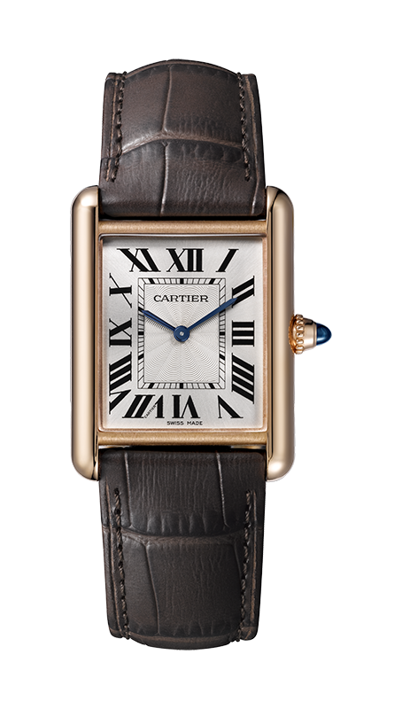
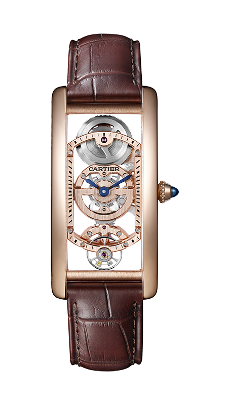
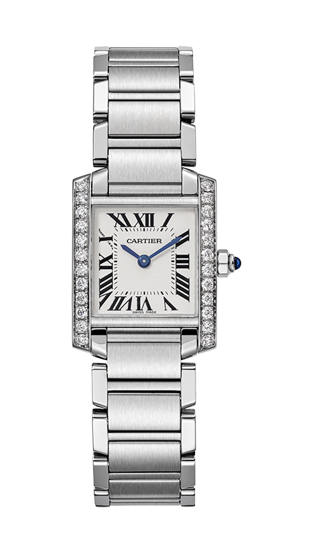
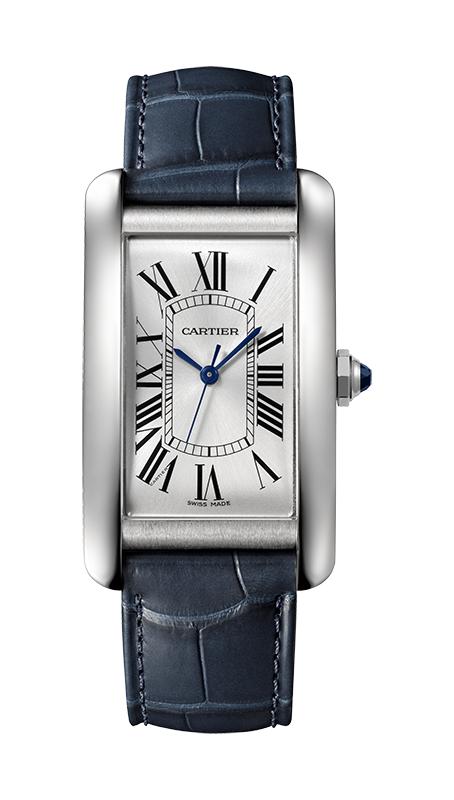

1917년 첫 스케치에서 시작한 탱크 워치는 탱크의 실루엣을 형상화하고 러그 라인을 확립하며 손목 시계의 시대를 100년에 걸쳐 걸어왔습니다.
그간의 긴 여정 속에서 탱크 워치는 디자인, 기능, 패션 다양한 각도에서 진화하고 소멸되었다가 다시 태어나기를 거듭하며 시대를 반영해 왔고 앞으로도 그러할 것입니다.
탱크 워치는 끊임없이 변화했지만 고유의 디자인을 완성하는 네 가지 요소를 이어옵니다. 탱크의 실루엣 그리는 케이스 좌우의 브롱카.
심플하지만 기능적인 다이얼을 완성하는 로만 인덱스와 레일웨이 인덱스. 까르띠에의 또 다른 면모인 주얼러를 각인시킴과 동시에 섬세함을 드러내는 사파이어 카보숑 컷 크라운이 그것입니다.
100주년을 맞이한 탱크 워치는 네 가지 대표모델을 새롭게 선보였습니다. 탱크 워치의 영원한 스탠더드인 탱크 루이 까르띠에는 다이얼에 기요세를 더해 우아함을 한층 끌어 올렸습니다.
부활한 탱크 상트레는 곡면의 스켈레톤 무브먼트로 커다란 존재감을 발산합니다. 탱크 프랑세즈는 클래식 탱크 워치의 반열에 오를 만큼 역사를 구축했고, 뉴욕의 마천루를 이미지한 탱크
아메리칸은 스테인리스 스틸 케이스를 선보이며 새로움을 선사합니다.

TANK LOUIS CARTIER
탱크 루이 까르띠에
탱크 노멀(Tank Normale)의 자리를 이어받은 탱크 워치의 영원한 스탠더드로 케이스가 그리는 직선과 러그의 부드럽고 우아한 곡선이 빚은 아름다움으로 수많은 사람들을 매료시키고 있습니다.

TANK CINTRÉE SKELETON
탱크 상트레 스켈레톤
케이스 세로의 길이가 긴 탱크 상트레는 허리가 가늘다는 뜻이 있습니다. 이것은 케이스 측면이 완만한 곡선을 그리는사실을 알 수 있고, 인체공학적인 커벡스 워치의 시대를 반영하는 디자인입니다.

TANK FRANÇAISE
탱크 프랑세즈
1996년 현대적 탱크 워치의 시대를 연 탱크 프랑세즈는 과감한 변화를 드러냈습니다. 섬세한 디테일을 지닌 브레이슬릿 링크의 연속적인 결합은 케이스를 넘어 탱크를 더욱 크게 그려냅니다.

TANK AMÉRICAINE
탱크 아메리칸
뉴욕의 마천루를 그려낸 탱크 아메리칸은 매끈하고 도회적인 실루엣을 자랑합니다. 하지만 다이얼은 고전적인 디테일을 유지해 상반되는 아름다움이 하나의 탱크 워치에 담겨 매력을 발산합니다.
The story goes that Louis Cartier himself modelled the design of the Tank watch on the top view of a tank:
the brancards evoked the treads and the case represented the cockpit of the vehicle. A legend is born.
구전에 따르면 루이 까르띠에는 동맹국의 탱크를 위에서 바라본 모습과 탱크 워치의 구조를 유사하게 디자인했고,
이에 따라 케터필라 형태의 브롱카와 탱크 외관을 닮은 케이스가 완성되었습니다
#TANK IS LEGEND
HISTORY OF TANK